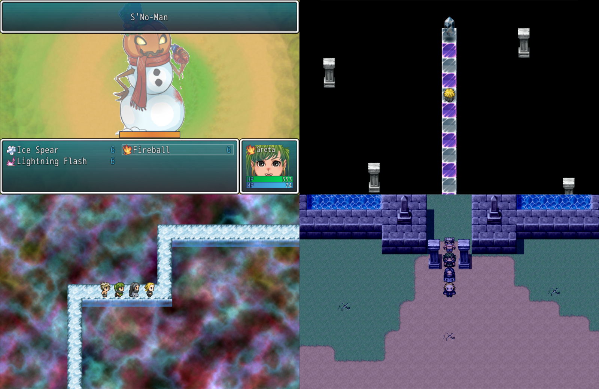

DOWNLOAD LINKS


| Status | Finished |
| Year | 2021 |
| Genre | RPG |
| Engine | RPG Maker VX Ace |
MFG38’s Average Adventure 2 is the sequel to MFG38’s Average Adventure REDUX. The story picks up where the previous game left off, with our protagonist – that is, me – expecting to return home safe after defeating Anataas but getting yanked to another corner of the multiverse instead. And so begins another adventure to save another world.
The sequel was built largely upon REDUX‘s foundation but with many systems revamped. The combat system saw the most significant overhaul, with the enemies you encounter having greatly varying stats and traits, adding a strategic layer that was sorely absent from the first game. The sequel is more linear, and there’s less in the way of optional content, but it has roughly twice the play time of REDUX, clocking in at 4-5 hours for an average playthrough.